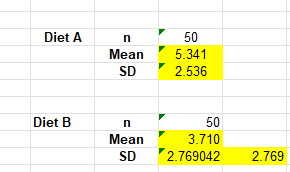
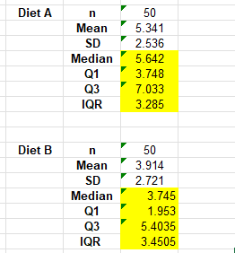
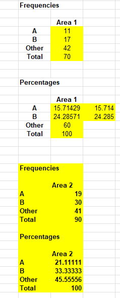
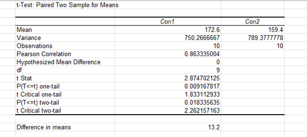
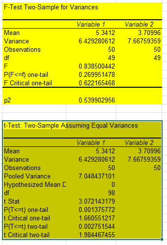

Georgia Niamh
Unit 7
Hypothesis testing worksheets:
Task 1: (Exercise 6.1)

Interpretation of data: Diet B has a lower average weight loss that Diet A seeming showing that Diet A is more effective.
Task 2: (Exercise 6.2)

Interpretation of data: The data shows that Diet B has a lower median weight loss compared to Diet A this indicates that potentially Diet A in fact better.
Task 3: (Exercise 6.3)

Interpretation of data: The data shows that area both area prefer other brands rather than A or B but that both area 1 and 2 prefer brand B over brand A.
Task 4: (Exercise 7.1)


Interpretation of data: the one tailed test would have offered a more specific insight the direction of the data.
Overall, I found this useful as it assisted in me understanding how data can be analysed and allowed me to practice my skills in Excel.
Case study: Accuracy of information initial post
Is it any more ethical for him to suggest analysing correct data in a way that supports two or more different conclusions?
If Abi were to analyse the data in a way that would achieve the conclusion his employer desires this may be unethical as it would hide the facts from the consumer impacting their ability to make an informed decision. BCS (2024) states the importance of integrity by not misrepresenting information and changing the data would compromise this.
Is Abi obligated to present both the positive and the negative analyses?
Yes, Abi is professionally and ethically obligated to present the full, balanced, and most rigorous analyses. In both the BCS (2024) and ACM (2018) there is an emphasis placed on ensuring that work carried out is trustworthy and if Abi did not present the data accurately this would impact this area causing his ethics to come into question.
Is Abi responsible for the use to which others put his program results?
Abi is primarily responsible for the accuracy, completeness, and clarity of his results, but his direct responsibility for their misuse by others is limited, though he has a duty to mitigate it. This is in accordance with the BCS (2024), ACM (2018) and ASA (2021). It is important for Abi to have transparency and include the context surrounding his results to ensure that no one is misled.
If Abi does put forward both sets of results to the manufacturer, he suspects that they will publicise only the positive ones. What other courses of action has he?
Abi could whistle blow under the public interest disclosure act (1998) as the publication of the results could go against the EU food information to consumers regulation (2011) and could be used to falsely sell the product and promote it.
Overall, Abi should try to uphold ethical standards with his research, and this may involve going against the companies wishes.
References:
ACM. (2018). ACM Code of Ethics and Professional Conduct. Available at: https://www.acm.org/code-of-ethics (Accessed 23 September 2025).
ASA (2011) The ASA Ethical Guidelines 2021. Available at: https://www.theasa.org/ethics/ (Accessed 23 September 2025)
BCS. (2022) Code of Conduct for BCS Members (Version 8). Swindon: BCS, The Chartered Institute for IT.
Public interest disclosure act (1998) The Public Interest Disclosure Act. Available at: https://www.gov.uk/government/publications/guidance-for-auditors-and-independent-examiners-of-charities/the-public-interest-disclosure-act--2 (Accessed 23 September 2025)
EU food information to consumers regulation (2011) Health and Care Bill: food information for consumers – powers to amend retained EU law. Available at: https://www.gov.uk/government/publications/health-and-care-bill-factsheets/health-and-care-bill-food-information-for-consumers-powers-to-amend-retained-eu-law (Accessed 23 September 2025)